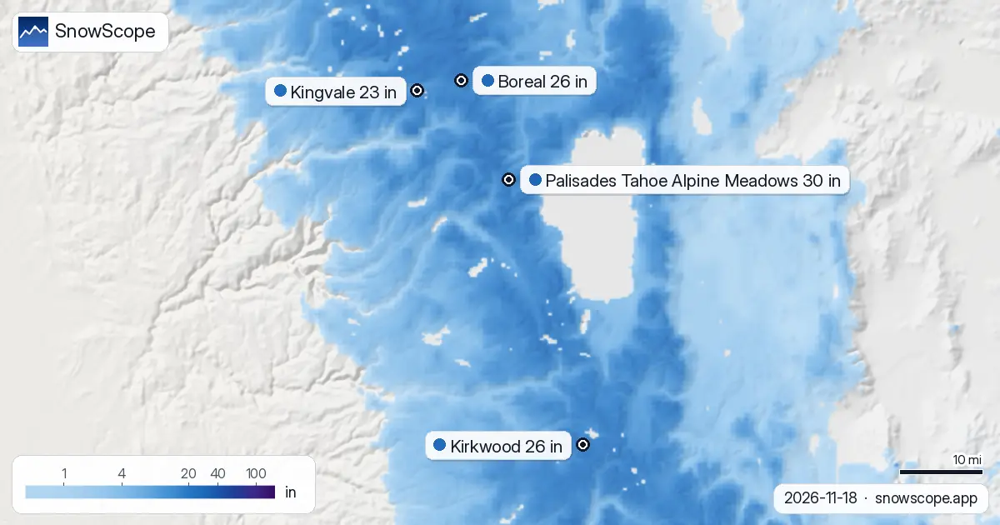

Boreal snow report: Where should you ski in the US West this weekend? Palisades Tahoe Alpine Meadows, Kingvale and Boreal
Where should you go skiing in the US West? If we were going this weekend, we would choose Palisades Tahoe Alpine Meadows, Kingvale and Boreal, based on today's depth, the last 72 hours of new snow and the forecast. Among the resorts in this report, Palisades Tahoe Alpine Meadows has the deepest snow up high today, about 30 in (75 cm), ahead of Kirkwood 26 in (66 cm) and Boreal 26 in (65 cm). Field work in dry mountains teaches one thing: the map is a start, the slope itself has the last word.
See the live snow forecast for Palisades Tahoe Alpine Meadows in the SnowScope appSnow depth, powder alerts and the 3D map, free.
Our shortlist
Palisades Tahoe Alpine Meadows picked up 15 in (39 cm) of fresh snow over the last 72 hours, 7 in (19 cm) of it in the last 24. At Palisades Tahoe Alpine Meadows, the difference between top and bottom is clear: 24 in (60 cm) at the top (8,494 ft / 2,589 m), 17 in (44 cm) at mid-mountain (7,359 ft / 2,243 m) and 10 in (25 cm) at the base (6,224 ft / 1,897 m). Palisades Tahoe Alpine Meadows looked snow-covered from space on 14 November, the last day without clouds.
In the last 72 hours Kingvale received 18 in (45 cm) of new snow, and 8 in (21 cm) of that came in the last 24 hours. On 14 November, its last clear day, the satellite picture showed Kingvale white with snow.
Boreal picked up 17 in (43 cm) of fresh snow over the last 72 hours, 8 in (20 cm) of it in the last 24. From the base to the top of Boreal: 19 in (49 cm) at the base (7,172 ft / 2,186 m), 21 in (53 cm) at mid-mountain (7,434 ft / 2,266 m) and 22 in (56 cm) at the top (7,700 ft / 2,347 m). Boreal looked snow-covered from space on 14 November, the last day without clouds.
| Resort | Snow depth | New snow, 72 h | Coming, next days | Top |
|---|---|---|---|---|
| Palisades Tahoe Alpine Meadows | 30 in (75 cm) | 15 in (39 cm) | 23 in (59 cm) | 8,494 ft (2,589 m) |
| Kingvale | 23 in (59 cm) | 18 in (45 cm) | 25 in (64 cm) | – |
| Boreal | 26 in (65 cm) | 17 in (43 cm) | 23 in (59 cm) | 7,700 ft (2,347 m) |
| Kirkwood | 26 in (66 cm) | 14 in (36 cm) | 26 in (66 cm) | 9,462 ft (2,884 m) |

Against past winters
At about 7,359 ft (2,243 m), Palisades Tahoe Alpine Meadows has 20 in (50 cm) today; a normal 18 November has 2 in (6 cm) there.
That is more than in 42 of the 46 past winters on this date.
In past winters the best snow at Palisades Tahoe Alpine Meadows usually came early March / mid-March.
An early lead like this matters most for the lower and middle runs, which usually wait until December for this much snow.
Day by day at Palisades Tahoe Alpine Meadows: Wednesday 18 November 7 in (19 cm); Thursday 19 November 18 in (45 cm); Friday 20 November 6 in (14 cm).
Height by height at Palisades Tahoe Alpine Meadows: 6,224 ft (1,897 m) 10 in (25 cm) on the ground, 28 in (71 cm) more in the next 7 days; 7,359 ft (2,243 m) 17 in (44 cm) on the ground, 43 in (110 cm) more in the next 7 days; 8,494 ft (2,589 m) 24 in (60 cm) on the ground, 46 in (117 cm) more in the next 7 days.
Which height to ski today
Expect two seasons in one resort at Palisades Tahoe Alpine Meadows on 18 November: a freezing level of 3,215 ft (980 m) to 6,496 ft (1,980 m) means wet snow below and wintry snow above.
In dry mountains like the Atlas, snow lasts on high, north-facing slopes and melts first on the sunny side. Follow the shade.
The days ahead
And more is coming: by 21 November, the forecast brings 23 in (59 cm) at Palisades Tahoe Alpine Meadows, 25 in (64 cm) at Kingvale and 23 in (59 cm) at Boreal.
Forecasts a few days ahead can change: look at the map again the day before you travel.
Avalanche danger and safety
The official avalanche bulletin (avalanche.org (US national portal)) gives level 2 on the 5-level scale for the Palisades Tahoe Alpine Meadows area today.
Before you ski off-piste or go touring, read the official avalanche bulletin (links below).
Tips for skiers
- Snow on the map does not mean a resort is open: check lifts and opening dates on the resort's website.
- The snow does not read the resort guide: small areas next to the leaders often got the same amount. Compare them on the map.
- Early-season snow is thin. Stay on open, groomed pistes: rocks and grass can hide just under the surface.
- Ski the shady side: high, north-facing slopes hold their snow, while slopes facing south go bare first.
- Get a powder alert in the SnowScope app to know when Palisades Tahoe Alpine Meadows gets fresh snow.
About these numbers
Resort snow depths are the deepest snow on the resort's upper slopes from the SnowScope snow model (about 1 km, run of 18 November); they are estimates for an area, not a measurement at one point. Station values are measurements on the date shown. Forecasts can change. Always read the official avalanche bulletin before going off-piste.
Official avalanche bulletins: avalanche.org (US national portal)
Cite this report
For research, teaching or the press: the numbers and charts are free to reuse under CC BY 4.0 with this citation.
SnowScope (2026), Boreal snow report: Where should you ski in the US West this weekend? Palisades Tahoe Alpine Meadows, Kingvale and Boreal, https://snowscope.app/blog/en/2026/11/us-west-where-to-ski-this-weekend-18-november-2026.html, accessed 2026-11-18
SnowScope (Atlas Labs). (2026, November 18). Boreal snow report: Where should you ski in the US West this weekend? Palisades Tahoe Alpine Meadows, Kingvale and Boreal. SnowScope snow reports. https://snowscope.app/blog/en/2026/11/us-west-where-to-ski-this-weekend-18-november-2026.html
BibTeX
@misc{snowscope2026uswestwheretoskithisweek,
author = {{SnowScope (Atlas Labs)}},
title = {Boreal snow report: Where should you ski in the US West this weekend? Palisades Tahoe Alpine Meadows, Kingvale and Boreal},
year = {2026},
month = nov,
howpublished = {\url{https://snowscope.app/blog/en/2026/11/us-west-where-to-ski-this-weekend-18-november-2026.html}},
note = {Published 2026-11-18 17:33 UTC; accessed 2026-11-18}
}· CC BY 4.0 · Methods, data and tools →
Palisades Tahoe Alpine Meadows: snow and temperature by height, this winter vs last (tools) →
Follow Palisades Tahoe Alpine Meadows
Free: a message when fresh snow is coming, and the forecast every morning.
More snow reports

Deer Valley ski conditions on 13 November 2026: no real snow on the ground yet, about 4 in near the top from the weekend storm, rain on the low East Village side below about 6,700 to 7,600 ft, and 11 in up top over the week.

Bogus Basin snow check for Boise skiers on 13 November 2026: no snow on the ground yet, rain and mixed snow this weekend with a snow level near 6,300 to 6,800 ft, then colder air and about 8 in at the summit by next week.